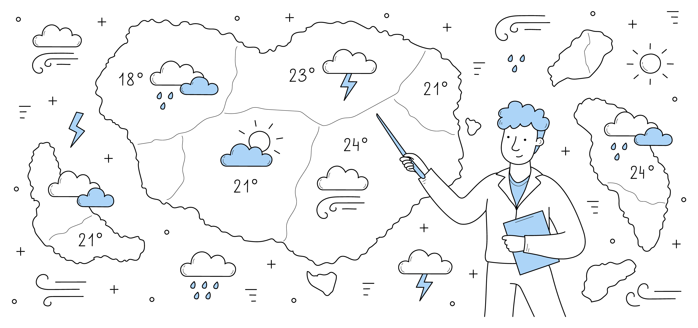

Roberto Brasero, meteorólogo, avanza la llegada del tiempo otoñal

- Brasero avisa de la llegada de algunos cambios que llegarán por el noroeste peninsular y se irán extendiendo al resto del territorio la semana que viene.
- El calor extremo comienza a dar una tregua este fin de semana: el domingo llega un giro radical con las lluvias
Precedentes
A pesar de haber entrado ya en el otoño, las temperaturas en la mayor parte del país todavía marcan valores típicamente veraniegos. Sin embargo, ya este fin de semana empezarán a notarse algunos cambios en el noroeste peninsular que paulatinamente irán extendiéndose al resto del territorio que vaticinan un tiempo más otoñal, tal y como ha avanzado meteorólogo Roberto Brasero.
"El próximo martes día 29 es San Miguel, y en estos días solíamos tener lo que se llama el veranillo de San Miguel, que era un periodo en el que volvían a subir las temperaturas después de que hubieran bajado con la llegada del otoño", expone el presentador del tiempo en Antena 3. No obstante, este año no hace falta un "veranillo", prosigue el experto, ya que España se encuentra en "pleno verano".
"Estamos rozando los 40 grados en Andalucía, siguen las noches de más de 20 grados en el Mediterráneo, y (las temperaturas) han bajado por Galicia y el Cantábrico", que hasta ahora "estuvieron muy altas", apunta.
Predicciones
Respecto a la predicción a corto plazo, Brasero señala que este fin de semana las temperaturas "ya no suben más", aunque "seguirán siendo muy elevadas" y eso hace que "se prolongue el verano". Pese a ello, el calor sofocante parece tener las horas contadas, según las previsiones meteorológicas.
Así, para este sábado se esperan "más nubes y por el este van a bajar un pelín las temperaturas, pero el calor sigue, también "en Canarias, con la calima y esos chubascos que estamos teniendo". La nubosidad irá en aumento a partir del domingo, indica el meteorólogo. "Esas nubes del oeste harán ahí bajar las temperaturas", sostiene al respecto.
Para saber exactamente "cuándo se acabará este verano prolongado", Roberto Brasero explica a través de la observación del satélite Meteosat que primero es necesario "una potente borrasca" que pueda "romper este potente anticiclón". "Eso lo vemos en el Meteosat, incluso ya ha enviado un frente", avanza el experto.
Este frente "se acerca el domingo, afecta a Galicia y ahí sí puede llover como en un día de otoño, pero en el resto no pasa todavía", asegura. El lunes "se cuela el aire frío que va a generar chubascos" en zonas de Galicia, País Vasco, Navarra, La Rioja, norte de Aragón y noroeste de Cataluña.
En cambio, para el martes llega otro frente que "parece más potente" y que puede provocar que llueva en el este peninsular y zonas del oeste.
"No está claro por dónde va a entrar ese frente con la lluvia, pero sí vemos movimiento de nubes con chubascos para la semana que viene que harían bajar un poco las temperaturas, que ya no serán tan elevadas como las que tenemos. Se acabó el verano", ha sentenciado Brasero.